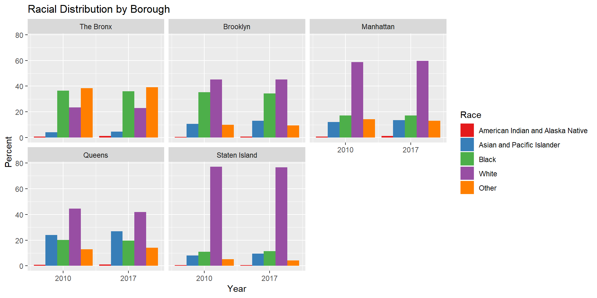

Although they vary by state, the basic idea of stop-and-frisk laws is that to lawfully stop someone, an officer “must have a reasonable suspicion that a crime has been, is being, or is about to be committed by the suspect.”1 The New York Police Department has cataloged stop-and-frisk data for the past 14 years in the five boroughs of New York City, from 2003 to 2017.2 Considering the history of racism in the United States and the myriad of news surrounding racially-motivated police brutality, we decided to examine this practice for racial bias among people stopped, and investigate race as a factor in searches, frisks, and use of physical force.
To start, this graph below visualizes the racial makeup of the 5 boroughs of New York City. To have a baseline for examining potential racial bias, we needed race demographic data for each borough. We found population demographics data from the American Community Survey 5-Year Estimates and selected the years 2017 and 2010 to compare the NYPD data with.
#Change order of race levels for graph
race_levels <- c("American Indian and Alaska Native", "Asian and Pacific Islander", "Black", "White", "Other")
fulldem<- fulldem %>%
mutate(Race = factor(Race, levels = race_levels))
#Change order of borough levels for graph
borough_levels <- c("The Bronx", "Brooklyn", "Manhattan", "Queens", "Staten Island")
fulldem <- fulldem %>%
mutate(Borough = factor(Borough, levels = borough_levels))#Plot race demographics in each borough for both years
ggplot(data = fulldem,
mapping = aes(x = Year, y = Percent, fill = Race)) + geom_col(position =
position_dodge()) + facet_wrap( ~ Borough) + scale_x_continuous(breaks =
c(2010, 2017)) + scale_fill_brewer(palette = "Set1") +
ggtitle("Racial Distribution by Borough")
In all the boroughs, the Indigenous population makes up less than 1% of the population. White makes up the largest racial demographic on average (~50% in 2010), but is not evenly distributed across the boroughs. Black stands at an average of 24%, with the highest percentage in the Bronx (36%) and the lowest in Staten Island (11%). The racial makeup of the boroughs did not significantly change in the 7-year span.
If NYPD stop-and-frisk practices were not racially motivated, we would expect stop-and-frisk rates to follow about the same racial breakdown as the population demographics for stops and physical force usage.
Busby, John C. “Stop and Frisk.” LII / Legal Information Institute, 17 Sept. 2009, https://www.law.cornell.edu/wex/stop_and_frisk.↩
“Stop, Question and Frisk Data.” NYPD. https://www1.nyc.gov/site/nypd/stats/reports-analysis/stopfrisk.page. Accessed 15 Dec. 2018↩